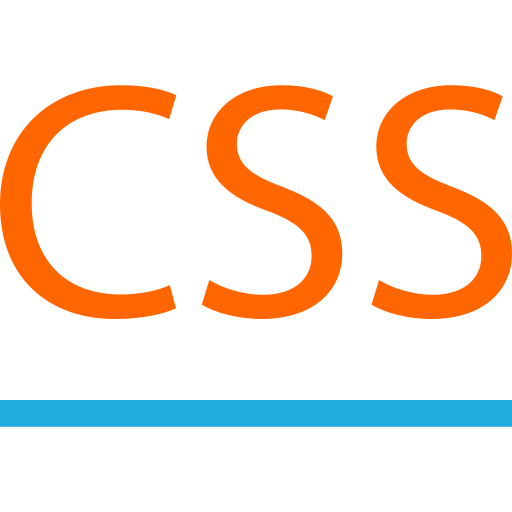
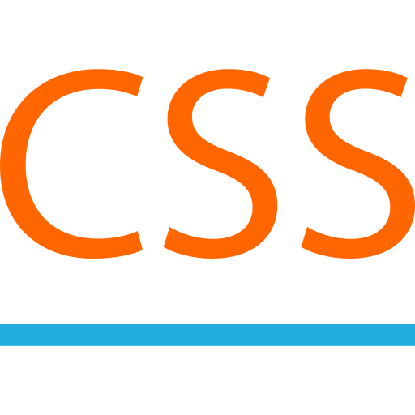

Общая информация
Имя: Даниил
Фамилия: Маричук
Пол: мужской
Дата рождения: 1996-10-26
Город: Пенза
Языки:
- Английский: C1
- Французский: B2
- Немецкий: B1
Эл. почта: d_marichuk@mail.ru
Навыки


 


Опыт работы
-
Компания: ПАО "Росбанк"
Позиция: Fullstack Разработчик
Начало: 2022-01-12
Конец: по настоящее время
Описание: Участвую в разработке сервиса для поддержки внутреннего пользователя, создание заявок на обслуживание, интерграция с HPSM. Стэк: Vue3, Python3/Django
-
Компания: РусМолко
Позиция: 2021-12-31
Начало: 2021-05-12
Конец: по настоящее время
Описание: На работе в одиночку поддерживаю веб-приложение на Flask и пишу скрипты для извлечения данных из различных систем. Приложение не особо большое, в основном для дэшбордов и написания отчётов по нарушениям. Проект получил в наследство, так что хорошо читаю чужой код. В проект добавил git (Gitea), систему аутентификации с правами доступа, api для выгрузки данных и взаимодействием с JS, логи, тесты, отправка эл.почты.
Образование
-
Место: ПГУ
Специальность: Методика преподавания иностранных языков
Период: с 2014-09-01 по 2019-06-01
О себе
Во время начала пандемии начал изучать Python, так как из за специфики предыдущей работы появилось много свободного времени. Втянулся сразу, так как обожаю задачки на логику и оптимизацию процессов, а Python предоставил для этого богатую почву. Простой синтаксис, поддержка различных парадигм, универсальность, философия Zen of python и практически бесконечное количество библиотек под всевозможные нужды. Rule 34 of Python "There is library of it. No exceptions.”
В свободное от работы время люблю кодить🙃, смотреть авторское кино, залипать на кейкапы для механических клавиатур на алиэкспрессе, дегустировать specialty-кофе и экспериментировать с рецептами крем-брюле. Могу провести кулинарный мастер-класс🤌 (бесплатно, если у вас работаю).